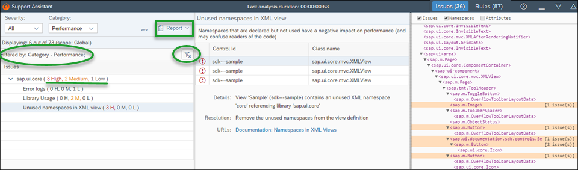

What's New in OpenUI5
1.56
What's New in OpenUI5
1.56
With
this release, OpenUI5 is
upgraded from version 1.54 to 1.56.
New Features
New Event Handler Parameter Syntax
When event handlers are assigned to control events in XML views, you can now also
specify parameters which can be passed to the event handler. The parameters can
be static values as well as bindings and even expressions. This feature helps to
reduce controller code and avoid unnecessary controller methods, and separates
the controller logic from the retrieval of the required input values.
Hidden
<Button text="Add Product" press=".modifyList('add ', ${products>unitPrice})"/>For more information, see Handling Events in XML Views.
Support Assistant
The Support Assistant now allows you to import and export your rule selection.
This helps you when you want to perform more than one analysis with the same
subset of selected rules. The selection is exported as a .json
file with a title and description of your choice. You can then import this file
and load it whenever you want to execute the same rules in another analysis.

For more information, see Rules Management.
XML Composite Control
A new type of composite
control,
the XML composite control, is now available. It let's you
build more flexible controls that contain separate XML and JavaScript parts. For more
information, see the API Reference and the Samples.
Improved
Features
OpenUI5
OData V4 Model
The new version of the OpenUI5 OData V4
model has the following features:
-
Binding parameter $$ownRequest to enforce that a
binding sends its own requests.
-
Binding parameter $$aggregation to display
aggregated data.
This feature is still a work in progress. So far it supports
displaying a flat list of aggregated data or grouping by one
groupable property without being able to expand.
-
The refresh of a single row in an absolute list binding can now also
take filters into account .
-
When executing a deferred bound operation, the result of the promise
returned by v4.ODataContextBinding#execute is the
context representing the data of the bound operation response if
certain conditions are fulfilled. For more information check the API
for .
Due to the limited feature scope of this version of the OpenUI5 OData V4
model, check that all required features are in place before developing
applications. Check the detailed documentation of the features, as certain
parts of a feature may be missing. While we aim to be compatible with
existing controls, some controls might not work due to small
incompatibilities compared to
sap.ui.model.odata.(v2.)ODataModel, or due to missing
features in the model (such as tree binding). This also applies to controls such as
TreeTable and AnalyticalTable, which
are not supported together with the OpenUI5 OData V4
model. The interface for applications has been changed for easier and more
efficient use of the model. For a summary of these changes, see Changes Compared to OData V2 Model.
For more
information, see OData V4 Model, the
API Reference, and the Sample in the Demo Kit.
-
sap.ui.support.ExecutionScope.getElements has a new
parameter cloned. It allows users of the Support Assistant
to filter out elements that are clones of list bindings. Now the results
will include only the representative clone. For
more information, see the API Reference.
-
A Filter view showing the currently applied filter has
been added to the Issues view of the Support
Assistant. The Clear Filtering button ( )
has moved to the Filter view. It is active only when
there is a filter selected.
)
has moved to the Filter view. It is active only when
there is a filter selected.
-
An explanatory note has been added to the Additional
Rulesets view under the header to give more clarity about
the function of these rulesets and why they are in a separate tab.
-
The Report button is now fixed to the panel to be
always visible and not to get into the overflow.
-
The font sizes are aligned across all three views for consistency.
-
In the Issues view the number of issues is only
highlighted when there are issues of medium and high severity. This
improvement helps to easily see the distribution of the issues by
severity.

Drag and Drop: General Support
(experimental)
Drag and drop has been enabled for all controls (with the
new dragDropConfig aggregation) in
sap.ui.core.Element.
This function is not intended for production use except for the controls for
which drag and drop has already been enabled in previous versions (for
example, for tables and lists).
dragDropConfig aggregation).
Improved Controls
-
sap.f.DynamicPageHeader: The expand/collapse arrow and the
pin/unpin buttons now have a new visual design. They are centered at the
bottom header border next to each other. The interaction behavior is
improved and you can now collapse a pinned header with a title tap or click
or by choosing the expand/collapse arrow. This means that the pinned state
now prevents the header from collapsing only when the user is scrolling the
page. For
more information, see the Sample.
The above
functionality and visual appearance is also maintained when using the
dynamic header of the sap.uxap.ObjectPage
control.
-
sap.m.DateTimePicker: Two new properties are added to the
control - minutesStep and secondsStep.
They allow configuring the value step for the minutes and seconds sliders.
For example, if you need the values for the minutes inside the slider to be
multiples of 5, you can use the option - minutesStep:5. For
more information, see the API Reference and the Sample.
-
sap.m.IconTabBar:
-
Drag and drop between the header and the overflow list is now
possible. When you hover over the overflow button with a dragged
element, an overflow list opens and you can drag an item from
the header to the list. For more information, see the API Reference and
the Sample.
-
A new TabDensityMode property is introduced in
both sap.m.IconTabBar and
sap.m.IconTabHeader. The property allows
both the Tab Bar and the Header to change their density within
different controls. For more information, see the API Reference and
the Sample.
-
sap.m.List: The columns aggregation was
deprecated in version 1.16 and has now been removed. Use the
sap.m.Table control instead.
-
sap.m.MenuButton: The control now has a new
menuPosition property. It specifies the position of the
popup menu with enlisted options. By default, the menu opens at the bottom
left side of the control but if there is not enough space in the current
window, it tries to open on the opposite side. For
more information, see the API Reference and the Sample.
-
sap.m.PlanningCalendar:
-
The new appointmentDragEnter event allows
appointments to be dragged and dropped between calendar rows. By
default, when the enableAppointmentDragAndDrop
property is enabled, appointments can be dragged only within
their original PlanningCalendarRow. When
enableAppointmentsDragAndDrop is set to
true, attaching the event handler to the
appointmentDragEnter event can change the
default behavior and allow appointments to be dragged on the
same row and between calendar rows.
-
Appointments can now be created in one
PlanningCalendarRow by dragging with the
mouse on an empty cell. This behavior is enabled with the
enableAppointmentCreate boolean property.
When creating is finished, an appointmentCreate
event is fired.
-
The new enableAppointmentResize boolean property
provides the possibility to resize appointments in one
PlanningCalendarRow. When resizing is
finished, an appointmentResize event is
fired.
A new functionality to copy appointments by dragging them is
added on the PlanningCalendarRow level. When
you press Ctrl/Cmd while dragging an
appointment, dropping it will create a copy.
For more information, see the API Reference and the
Sample.
-
sap.m.PlanningCalendarRow: The new
specialDates aggregation allows you to mark special
days on a row level. The aggregation is of type
sap.ui.unified.DayTypeRange but you can set a specific
type to the corresponding date. For
more information, see the API Reference and the Sample.
-
sap.m.SelectDialog: With the new growing
property, you can control the progressive loading of bound items. By
default, it is set to true which means that features like
the number of selected items in the info bar and search (if present) will
work only for the currently loaded items. To make sure that all items in the
table are loaded at once, and the above features work properly, you should
set the growing property to false.
The growing functionality cannot be used together with two-way
binding.
sap.m.Slider / sap.m.RangeSlider:
-
You can create a custom scale (for example, with dates) for the
sliders. To do this, you need to add custom scale and implement
the Iscale interface.
-
You can create a custom tooltip, by extending the class
sap.m.SliderTooltipBase and overriding some
methods. If you want to define your own content for the tooltip,
you should override just the
renderTooltipContent method.
For more
information, see Sliders and
the API Reference.
-
sap.m.Table:
sap.m.TableSelectDialog:
-
A new property growing is added to the control. It
determines the progressive loading. When set to
true, the features Selected
Count in Info bar,
Search, and Select/Deselect
All, if present, will work only for the currently
loaded items. To ensure that all items in the table are loaded and
these features work as expected, you need to set the property to
false.
The growing functionality cannot be used together with
two-way binding.
-
The control now has a Reset button which
allows you to clear the selection you have made in your Table Select
dialog with one click. The button is enabled only when you make a
selection. Otherwise, it is grayed out. For more information, see the API Reference and the
Sample.
-
sap.m.Tree: You can now expand and collapse multiple rows at
once by using the related methods. For
more information, see the API Reference for the
expand method, the API Reference for the
collapse method, and the Sample.
-
sap.ui.core.ScrollBar: The control has been deprecated. For
more information, see the API Reference.
-
sap.ui.layout.BlockLayout: The new
titleLink aggregation allows the replacement of the
title of a BlockLayout cell with a link using the
sap.m.Link control. For
more information, see the API Reference and the Sample.
-
sap.ui.layout library for form.Form,
form.SimpleForm controls: Usability of the form controls has been improved: The form
content is arranged in a flexible, horizontal way depending on the number of
columns so the user doesn’t have to scroll unnecessarily, and no vertical
space is wasted. A new layout ColumnLayout has been created
for that purpose. For
more information, see the API Reference and the Sample.
-
sap.ui.unified.Calendar: With the introduction of the
weekNumberSelect event, the week numbers in Gregorian
calendars have become interactive. The event indicates when you have clicked
on a week number. Keep in mind that for the event to work, the
intervalSelection property must be set to
true. For
more information, see the API Reference and the Sample.
-
sap.uxap.ObjectPageDynamicHeaderTitle: UI Adaptation is
enabled for the control and the following actions are possible:
-
Move, Split, and
Combine action buttons
-
Move items defined in the
snappedContent and
expandedContent aggregations
-
Remove and Reveal
the whole control
For more
information, see the Sample and turn on the UI
Adaptation using
the
wrench key button.
-
sap.uxap.ObjectPageHeader: The new
titleSelectorTooltip aggregation now enables you to set
a custom tooltip for the titleSelector button of the
sap.uxap.ObjectPageHeader. For
more information, see the API Reference.
Documentation
We have a new tutorial: Flexible Column Layout App. In this
tutorial, we showcase how to structure your OpenUI5 app using the
layout patterns that comply with the latest SAP Fiori design
guidelines.
Demo Kit Improvements
-
We've added a Change version button in the Demo Kit's
toolbar that enables you to easily switch the app to a different OpenUI5
version.
-
In the API Reference, at the bottom of the API tree
you can now find an Index by Version page that
displays all APIs grouped by the release version they were first introduced
in. Each release version is displayed as a separate tab.
For more
information, see API Reference: Index by Version.